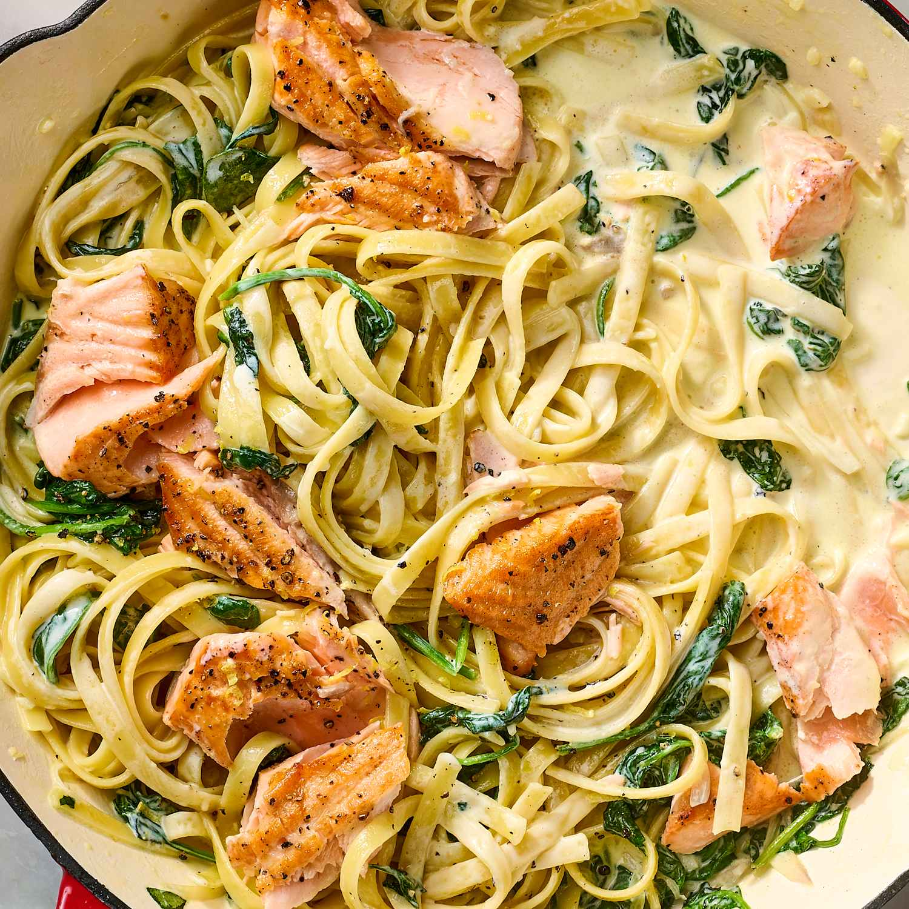

Creamy Salmon Pasta

Description
This creamy salmon pasta combines tender flakes of salmon with a rich, velvety sauce and fresh spinach for an elegant yet easy meal.
It's a great recipe when you want something comforting without spending hours in the kitchen.
The smooth cream sauce coats every strand of pasta, while the salmon and spinach create a delicious balance of flavor and freshness.
It's a restaurant-quality dish made with simple ingredients.
Ingredients
- 8 oz (225g) fettuccine or linguine
- 2 salmon fillets
- 1 tbsp olive oil
- 2 cloves garlic, minced
- 1 cup heavy cream
- 2 cups fresh spinach
- 1 tsp dried parsley
- Salt and pepper to taste
- Fresh parsley for garnish
Steps
- Cook the pasta according to package instructions. Drain and set aside.
- Season the salmon with salt and pepper.
- Heat olive oil in a skillet over medium heat and cook the salmon for 4-5 minutes per side.
- Remove the salmon from the skillet and flake it into bite-sized pieces.
- In the same skillet, sauté the garlic for 1 minute.
- Add the heavy cream and bring to a gentle simmer.
- Stir in the spinach and cook for 2-3 minutes until wilted.
- Add the cooked pasta and salmon, tossing to coat in the sauce.
- Season with parsley, salt, and pepper to taste.
- Garnish with fresh parsley and serve immediately.
Home